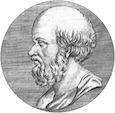
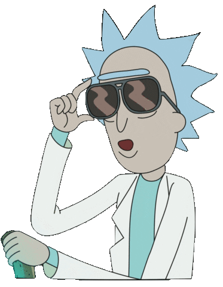

Une des anecdotes scientifiques les plus croustillantes : mesurer la circonférence de la Terre grâce à : un bâton, un chameau, et quelques bases de géométrie…
À l’origine de ce brillant procédé, un génie d’un autre temps : Eratosthène. Grand savant du IIIe siècle avant J.C., il fut nommé à la tête de la fameuse bibliothèque d’Alexandrie.
Eratosthène observa qu’à midi, le jour du solstice d’été (lorsque le soleil est au plus haut dans le ciel), un puit situé à Syène ne projetait aucune ombre, et que le soleil éclairait bien son fond. Il en déduisit que les rayons du soleil arrivaient pile à la verticale de la terre à cet endroit-là. Les rayons du soleil pointent donc vers le centre de la terre.
Il demanda alors à un ami, à Alexandrie (à environ 1000 km au nord de Syène) de planter un bâton dans le sol, bien droit (afin qu'il pointe lui aussi vers le centre de la Terre), et de mesurer l’ombre qu’il projetait. Contrairement au puit situé à Syène, ici le bâton projette une ombre. En mesurant l’ombre projetée par le baton, il put mesurer l’angle formé entre les rayons du soleil, et le bâton. Cet angle est identique à l’angle formé α centre de la Terre entre Alexandrie et (angle « α » sur le schéma). Dès lors, en reportant cet angle autant de fois que nécessaire pour obtenir 360°, et en multipliant autant de fois la distance Syène-Alexandrie, on obtient la circonférence de la Terre !
Minute, j’y viens !
Pour effectuer ses calculs, il ne manquait à Erathostène qu’une seule mesure : la distance Syène-Alexandrie. Aujourd’hui, ce calcul est simple et extrêmement précis grâce à la géolocalisation, mais à l’époque, Eratosthène fit appel à un bématiste. Un bématiste était une personne qui mesurait de grandes distances en comptant les pas de son chameau (réputé pour avoir un pas très régulier).
Il y a 2200 ans, à un époque où l'on n'était même pas certain que la Terre était bien ronde, Eratosthène mesura sa circonférence et ne se trompa finalement que de 700 km (sur 40 000 km, c’est assez raisonnable).
Wikipédia, « Eratosthène », URL.
|  | Blog créé par Daphné Pelat, dans le cadre du cours de création de site web de Liana Ermakova. Icons made by Freepik from www.flaticon.com. |